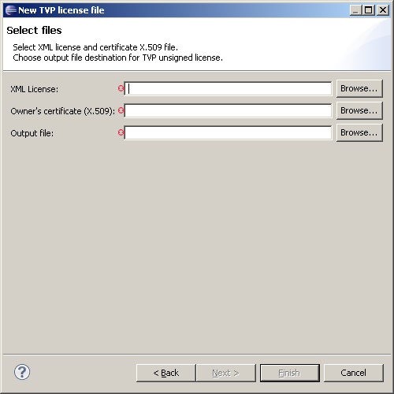

TVP license is a binary file that consists of license and encoded X.509 certificate. In further steps the TVP license will be signed with signature retrieved from server.
Open the TVP License Wizard by completing the following steps:
The following dialog will pop-up and user must set valid path to generate new TVP license.
Required Fields:
If the wizard is not finished early, the last optional page includes Software Signing. This is convenient if you want to create license and then sign it at once. For details see How to create U5500/U8500/M7400/L9540 signed software